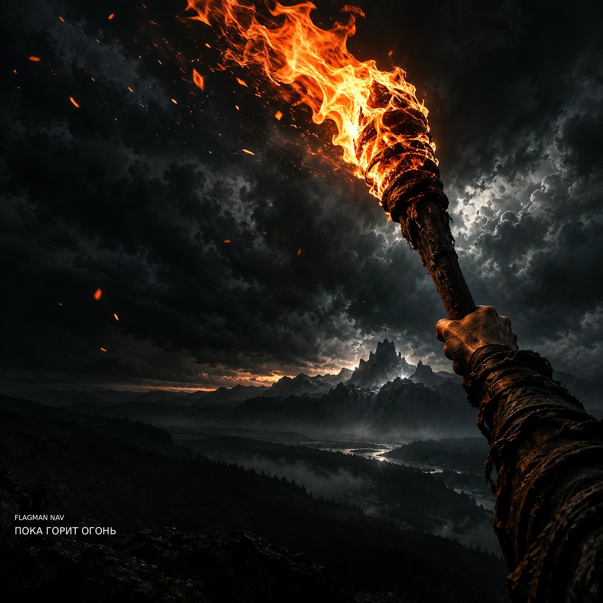

Сингл · 17 октября 2026
Пока горит огонь
- 1. Пока горит огоньСлова: Flagman NAV4:42
Текст
Ночь стоит стеной. Город предо мной. Я остался один На границе судьбы. Сколько раз я терял То, что должен искать? Сколько раз отступал, Чтобы снова начать? Но пока в моей груди Не погас этот огонь — Я ещё могу идти, Я ещё могу бороться! Пока горит огонь — Я буду идти! Пусть чёрная ночь У меня на пути! Пусть рушится мир, Пусть преследует страх — Пока горит огонь, Я не сделаю — Ни шага назад! Не назад! Не назад! Только вперёд! Рассвет режет глаза. Но я вижу теперь: Не спасают слова, Не открывает дверь Тот, кто ждёт у стены, Кто боится начать. Чтобы выбрать свой путь — Нужно просто встать. Пусть дорога пуста, Пусть не видно конца — Я оставлю свой след На холодном камне. Если выбора нет — Я создам его сам! Пока горит огонь — Я буду идти! Пусть чёрная ночь У меня на пути! Пусть рушится мир, Пусть преследует страх — Пока горит огонь, Я не сделаю — Ни шага назад! Не назад! Не назад! Только вперёд! Пока горит огонь — Я буду идти! Пусть чёрная ночь У меня на пути! Пусть рушится мир, Пусть преследует страх — Пока горит огонь, Я не сделаю — Ни шага назад! Не назад! Только вперёд! Пока горит огонь...